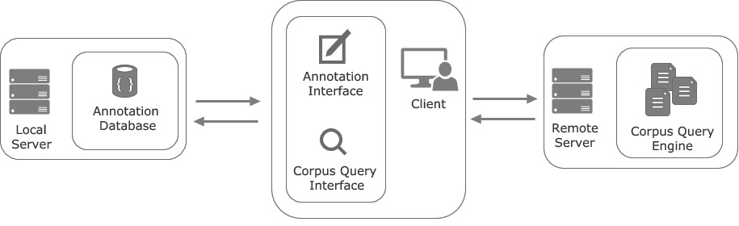
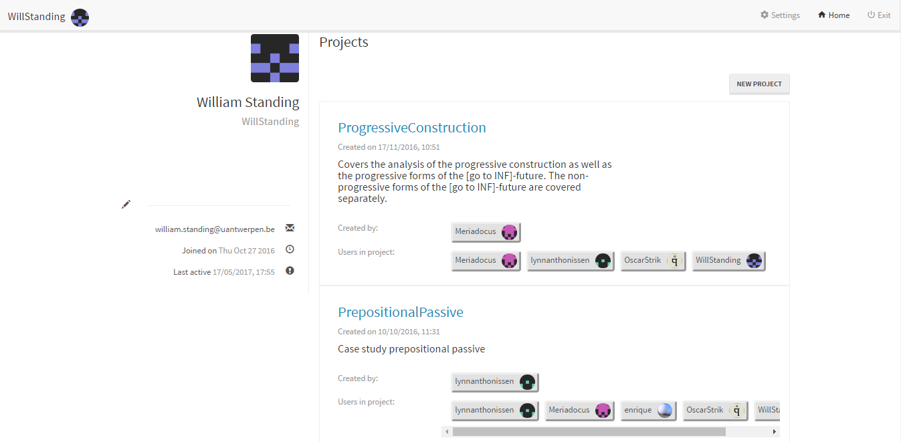
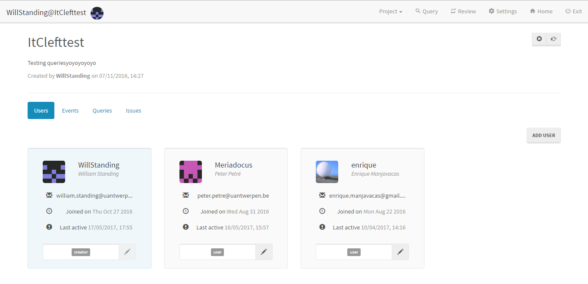
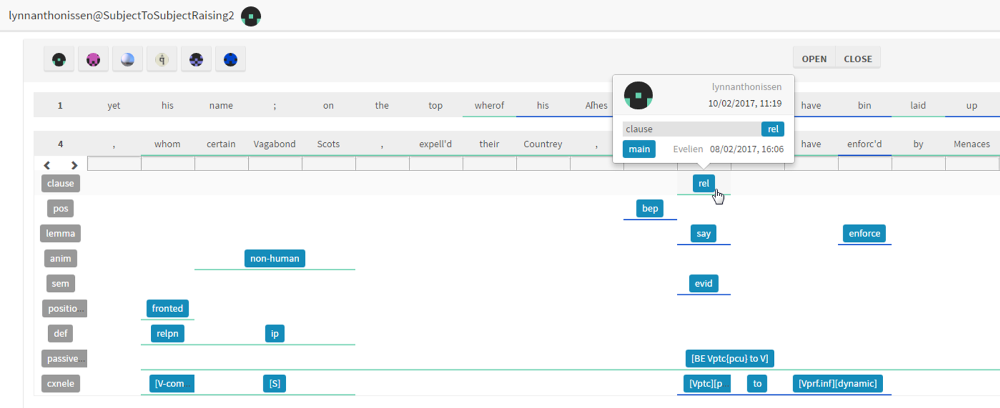
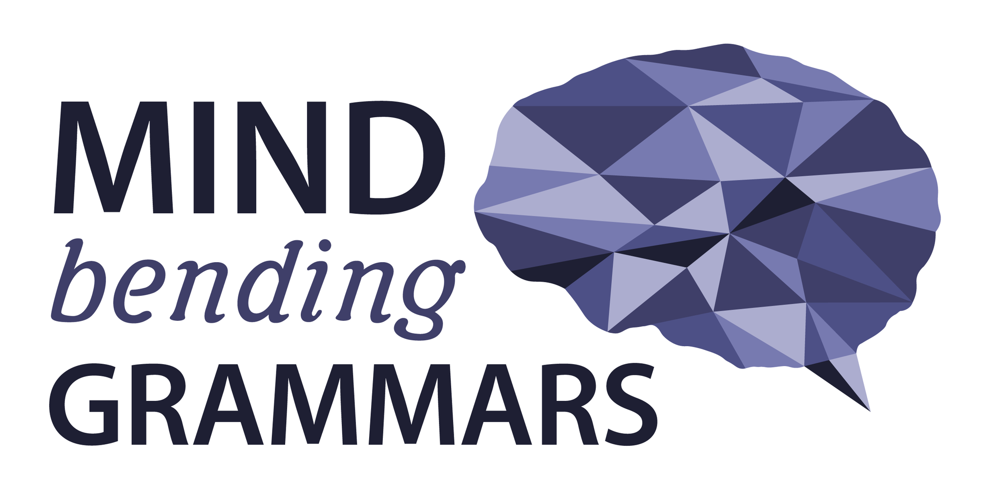

Enabling Annotation of Historical Corpora in an Asynchronous Collaborative Environment
Enrique Manjavacas & Peter Petré
DATECH17; 01/06/2017; Göttingen
https://emanjavacas.github.com/slides/datech17
1 Introduction
Context
- Mind-bending grammars (ERC-project on grammar changes in adults)
- How much innovation across the lifespan?
- Who innovates and why?
- For social or cognitive reasons?
- Annotation of the EMMA Corpus Early-Modern Multiloquent Authors
- 100m words of 17th/18th Century English
- Metadata (author, date, genre, generation)
My Goals
- Improving Corpus-Linguistics Research
- Simplifying Developement of Corpus Query/Annotation tools
2 Improving Corpus-Linguistics Research
Annotation-based Corpus Linguistics
- Corpus Query ⇒ hits
- Filter False Positives
- Add Linguistic Annotation
- Quantitative Analysis
Problems
- Linkage problem
- Synchronization problem
Linkage problem
Typical Corpus Linguistics Workflow


Drawback
Spread of non-reusable data
Synchronization problems
in multi-user, real-time environments
- Intrinsic: related to the linguistic annotation process itself
- Extrinsic: related to software synchronization challenges
Intrinsic
Unifying annotation schemes and their usage
- Modification of tagsets (create, remove & change tags)
- Interpretational disagreements (spotting & correcting)
Extrinsic
Fundamental problem of collaborative software/distributed systems
“How to ensure that dispersed users are able to modify a shared body of documents without overwriting each other’s changes”
3 Simplifying Developement of Corpus Query/Annotation tools
Current issues
- End-to-end monolithic tools ⇒ hard to adapt & integrate
- Public APIs for programmers are typically missing
- Result ⇒ Lots of rewriting, redundant tools
Solutions
- Modular design + Interface programming in corpus-tool developement
- Explicit separation of front-end and back-end logic (e.g. BlackLab)
4 CosyCat
Collaborative Synchronized Corpus Annotation Tool
https://www.github.com/emanjavacas/cosycat- Written in Clojure/ClojureScript
- Open source (Eclipse Public License)
What does it do?
- Encompass Corpus Query Engine + Annotation Interface
- Enable synchronized real-time multi-user annotation of text
- Follow modular design for easy reusability/adaptation of pre-exisiting tools
Architecture

Web-based Client
Real-time feedback client-to-client following a Pub/Sub architecture 
Subscribers are assigned roles & permissions (resource access control) 
Conflicts are explicitely resolved and documented using threads
Annotation Database
Support for Token & Span annotations
Token
{
"ann" : {
"key" : "pret",
"value" : "s"
},
"corpus" : "mbg-index",
"query" : "'gat'",
"span" : {
"type" : "token",
"scope" : 133601,
"doc" : "A01342"
},
"timestamp" : 1476095003208,
"username" : "OscarStrik",
"version" : 0
}
Span
{
"ann" : {
"key" : "cxnele",
"value" : "getobj"
},
"corpus" : "mbg-index",
"query" : "'gat'",
"span" : {
"type" : "IOB",
"scope" : {
"B" : 3222,
"O" : 3224
},
"doc" : "99863288"
},
"timestamp" : 1476095439636,
"username" : "OscarStrik",
"version" : 0
}
Version-controlled: Each annotation has a revision history 
Corpus-query engine
- Decoupling of Front-end and Query-engine
- Decoupling of Front-end and Query-engine
- Currently support for BlackLab Server
- Ongoing work on support for CQP
5 Remaining Challenges
Incremental Indexing of Corpus Annotations
- How to make the corpus query engine aware of the new annotations?
Scale
- Support large user groups (Currently working with some few dozens)
6 Thank you for your attention

